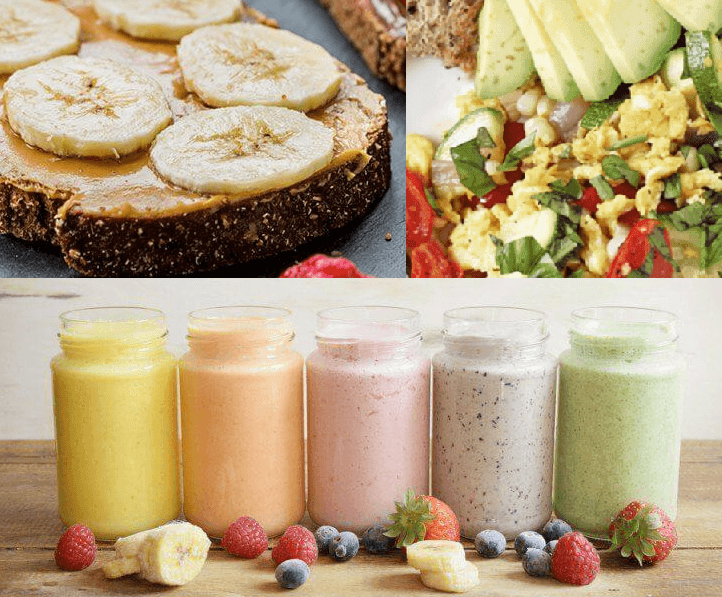
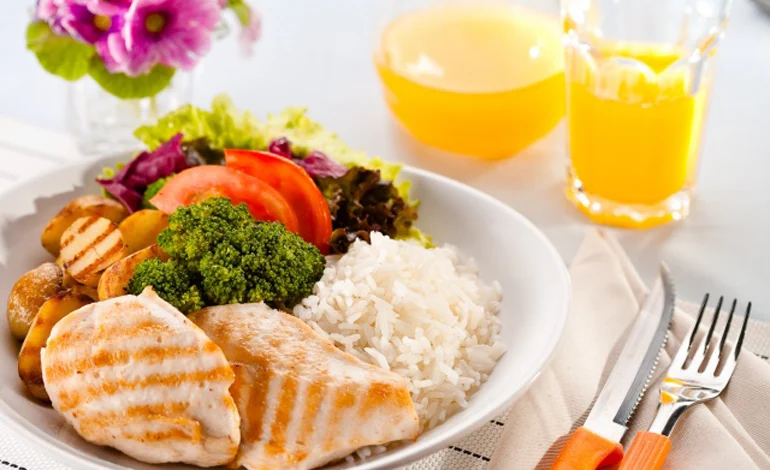

Recomendaciones de Alimentación para un Estilo de Vida Saludable
¿Por qué es importante la alimentación en el gimnasio?
La alimentación adecuada es crucial para lograr tus objetivos en el gimnasio, ya sea aumentar masa muscular, perder grasa, o mejorar tu rendimiento físico. Una dieta balanceada te dará la energía necesaria y optimizará tus resultados.
Consejos Básicos de Alimentación
- Comer proteínas magras: El consumo adecuado de proteínas es esencial para la reparación y crecimiento muscular.
- Incluir carbohidratos complejos: Los carbohidratos son la fuente principal de energía para el cuerpo. Asegúrate de consumir carbohidratos complejos, como arroz integral y avena.
- Grasas saludables: Las grasas saludables (como las que se encuentran en los aguacates y frutos secos) son esenciales para el funcionamiento hormonal.
- Hidratación: Mantén una ingesta adecuada de agua antes, durante y después de tu entrenamiento.



Alimentos Recomendados
Proteínas
- Pollo
- Pescado
- Huevos
- Lentejas
Carbohidratos
- Avena
- Arroz integral
- Papas dulces
- Pan integral
Grasas Saludables
- Aguacate
- Frutos secos
- Semillas de chía
- Aceite de oliva
Alimentación Pre y Post Entrenamiento
Antes del Entrenamiento:
Es recomendable consumir una comida ligera 30-60 minutos antes del entrenamiento. Un ejemplo podría ser un batido de proteínas con plátano o una tostada integral con aguacate.
Después del Entrenamiento:
Después de entrenar, se recomienda consumir una mezcla de proteínas y carbohidratos para facilitar la recuperación. Ejemplo: un batido de proteínas con avena o arroz integral con pollo.